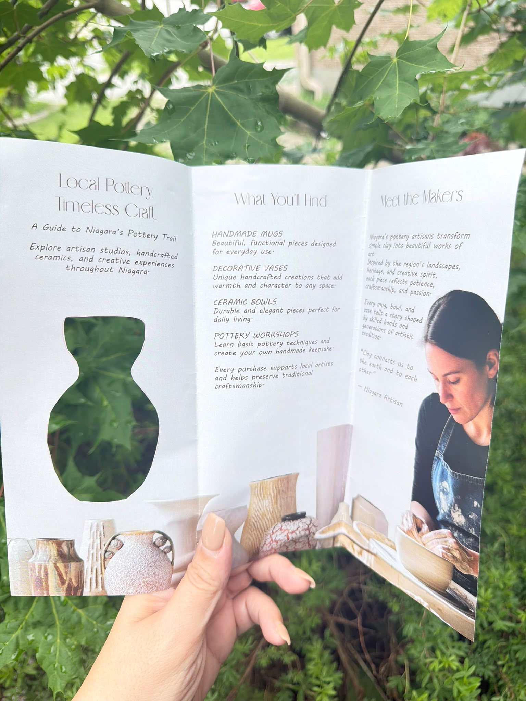
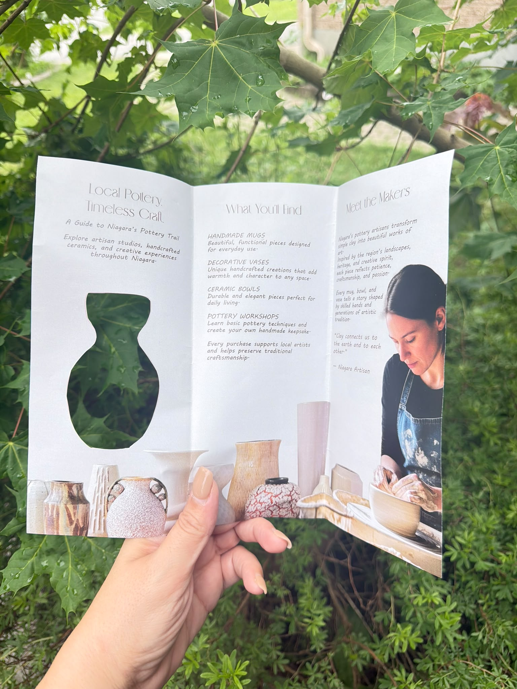
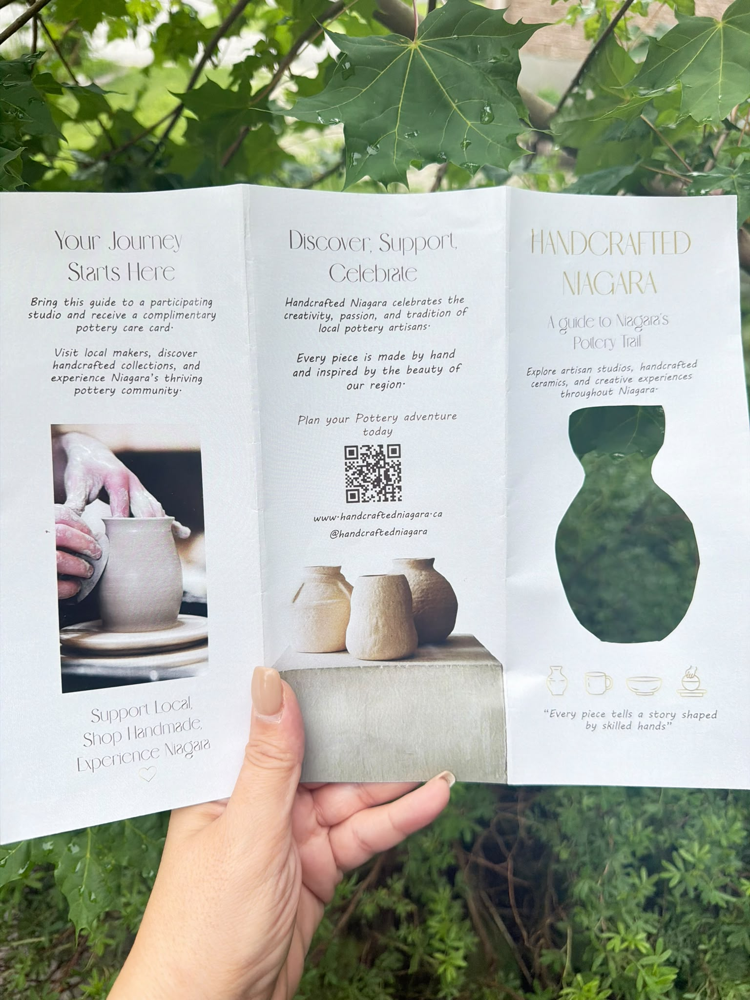
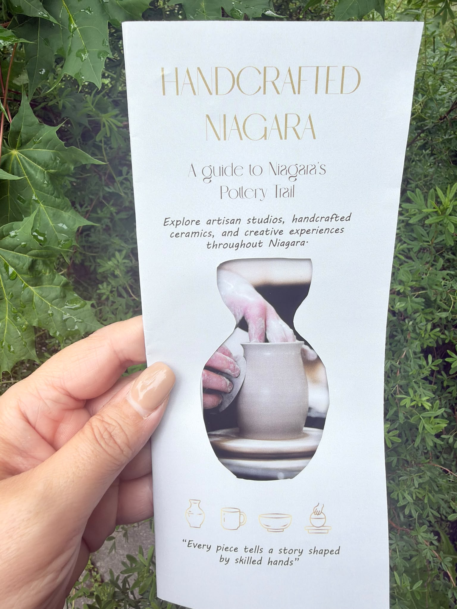

Handcrafted Niagara
A folded visitor guide introducing Niagara’s pottery trail, local makers, ceramic collections and hands-on experiences. The project combines a shaped brochure concept, photography, clear information hierarchy and a print-ready six-panel layout.

Project overview
A folded visitor guide introducing Niagara’s pottery trail, local makers, ceramic collections and hands-on experiences. The project combines a shaped brochure concept, photography, clear information hierarchy and a print-ready six-panel layout.
This work is presented as a student design project.
Design focus
- Six-panel printed brochure with a distinctive shaped cover
- Information about pottery artisans, studio visits and experiences
- Layout and hierarchy across the folded format




Explore the complete publication
Open the full PDF to review the page layouts and production artwork.
PDF preview support varies by browser and device.